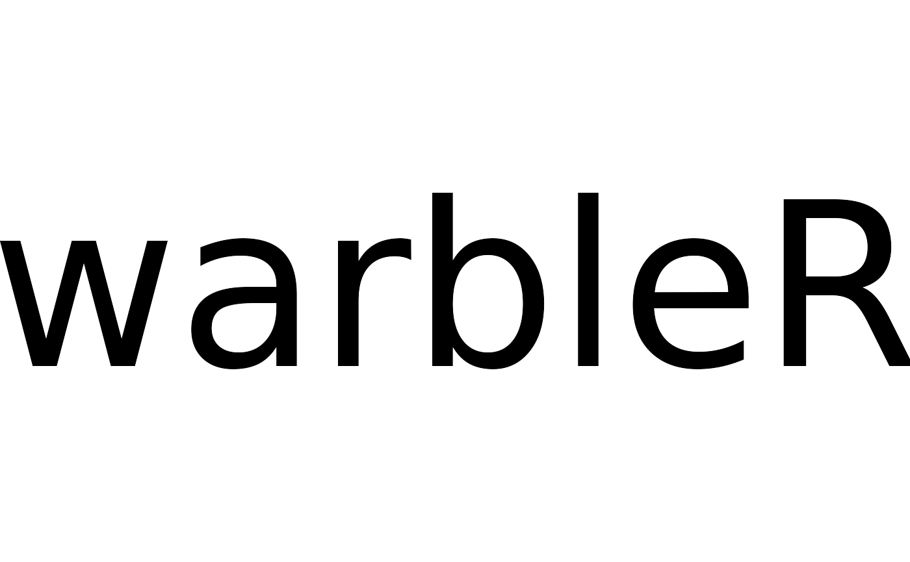

image_to_wave converts images in 'png' format into wave objects using the inverse Fourier transformation
Usage
image_to_wave(
file,
duration = 1,
samp.rate = 44.1,
bit.depth = 16,
flim = c(0, samp.rate/2),
plot = TRUE
)Arguments
- file
Character with the name of image file to be converted. File must be in 'png' format.
- duration
duration of the output wave object (in s).
- samp.rate
Numeric vector of length 1 indicating the sampling rate of the output wave object (in kHz). Default is 44.1.
- bit.depth
Numeric vector of length 1 with the dynamic interval (i.e. bit depth) for output files. Default is 16.
- flim
Numeric vector of length 2 indicating the highest and lowest frequency limits (kHz) in which the image would be located. Default is
c(0, samp.rate / 2).- plot
Logical argument to control if image is plotted after being imported into R.
Details
This function converts images in 'png' format into wave objects using the inverse Fourier transformation.
References
Araya-Salas, M., & Smith-Vidaurre, G. (2017). warbleR: An R package to streamline analysis of animal acoustic signals. Methods in Ecology and Evolution, 8(2), 184-191.
Author
Marcelo Araya-Salas (marcelo.araya@ucr.ac.cr)
Examples
# \donttest{
### create image with text to use in the spectrogram
# remove margins of plot
par(mar = rep(0, 4))
# empty plot
plot(0, type = "n", axes = FALSE, ann = FALSE, xlim = c(0, 1), ylim = c(0, 1))
# text to include
text <- " warbleR "
# add text
text(x = 0.5, y = 0.5, labels = text, cex = 11, font = 1)

# save image in temporary directory
dev2bitmap(file.path(tempdir(), "temp-img.png"), type = "pngmono", res = 30)
# read it
wv <- image_to_wave(file = file.path(tempdir(), "temp-img.png"), plot = TRUE, flim = c(1, 12))
# output wave object
# wv
## plot it
# reset margins
par(mar = c(5, 4, 4, 2) + 0.1)
# plot spectrogram
# spectro(wave = wv, scale = FALSE, collevels = seq(-30, 0, 5),
# palette = reverse.terrain.colors, ovlp = 90, grid = FALSE, flim = c(2, 11))
# }